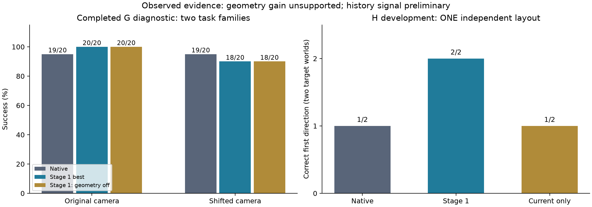

验证资产与评测设计 · 2026-09-20T12:07:29.024765+00:00 · 数据来自已有原始记录
统一实验文档（第2.11节） · 机器可读协议 · 数字与来源

| 模型 | 原视角 | 扰动视角 |
|---|---|---|
| Native | 19/20 | 19/20 |
| Stage 1 best | 20/20 | 18/20 |
| Stage 1: geometry off | 20/20 | 18/20 |
G共120回合、20个布局、2个任务族。扰动条件中阶段一相对原生差值−5个百分点，配对95%区间[−20,+10]；相对去几何差值0，区间[−15,+15]。不能据此确认收益，也不能证明等价。去几何是推理干预，不是重新训练的消融。
H灰屏首动作：原生1/2、阶段一2/2、仅当前输入1/2；仅一个开发布局、两个目标世界。恢复视觉后的最终成功不等于记住了历史。普通操作预检三种权重均4/4，但使用训练起点，只支持工程检查。
| 测试 | 每模型回合 | 主要指标 | 状态 |
|---|---|---|---|
| K Basic skill retention | 96 | task_macro_success | 设计，未运行 |
| G Calibrated spatial transfer | 288 | paired_robustness_drop_difference | 设计，未运行 |
| H Evidence memory and its boundary | 384 | first_prefix_correct_choice_before_reobservation | 设计，未运行 |
| R Execution feedback and recovery | 96 | corrective_action_within_prespecified_budget | 设计，未运行 |
| L Language grounding versus action memorization | 144 | correct_instruction_conditioned_target | 设计，未运行 |
| O Object scene and compositional transfer | 384 | per_stratum_task_macro_success | 设计，未运行 |
| X Interactive information acquisition | 192 | reveal_then_evidence_correct_action_and_task_success | 设计，未运行 |
另有P：600个离线窗口×4种动作条件；B：48个初态×3条实际动作分支。它们分别检验预测敏感性与真实动作后果对应关系。
| id | method | status | purpose |
|---|---|---|---|
| M0 | Native MolmoAct2-LIBERO | available | Practical pretrained baseline; no claim of matched information or compute. |
| M1 | Stage-one best | available | Geometry/history adaptation before future supervision. |
| M2 | Stage-two best | training | Final proposed method before any IP-specific demonstrations. |
| C2_action | Stage-one best plus matched action-only continuation | needs_implementation_and_training | Isolate future supervision from extra updates and different learning rates. |
| C2_detach | Matched predictor with detached shared representation | needs_implementation_and_training | Separate predictor learning from predictive gradients improving the deployed policy. |
| I_geometry | Same trained policy with geometry residual disabled | stage_one_supported_stage_two_adapter_needed | Input-dependence diagnostic, not a retrained architecture ablation. |
| I_history | Same trained policy using only current observation | stage_one_supported_stage_two_adapter_needed | Test dependence on history; input distribution shift remains a confound. |
| C1_native | Native interface with matched stage-one adaptation budget | not_trained | Isolate geometry/history interfaces from ordinary fine-tuning benefits. |
| C1_no_geometry | Retrained stage one without geometry | not_trained | Confirm architecture contribution under matched training. |
| C1_no_history | Retrained stage one without history | not_trained | Confirm history contribution under matched training. |
按新布局、新物体、新场景、新组合分别报告；同一资产及变体不跨开发/测试划分。48个物体身份和六类场景目前是目标设计，底座预训练接触情况未知。M2需超过等预算动作续训对照才能把收益归于预测监督；还需在信息获取任务上通过“揭示→读取证据→正确行动”整条链，才能讨论主动感知迁移。
| id | purpose | pair | required_views | endpoint | status |
|---|---|---|---|---|---|
| geometry | Projection changes and contact errors | same state, different camera | normal/shifted; agent + wrist | contact and goal | storyboard only |
| history | History changes the first decision | identical current input, opposite real evidence | real past, current blackout, first five steps | choice before reobservation | storyboard only |
| consequence | Actions predict their own observed consequences | same initial state, three actual action branches | observed endpoints and latent error; no invented RGB future | matching future branch | storyboard only |
| language | Same image and different valid goal | canonical/paraphrase/changed target | instruction + chosen object | goal conditioned on language | storyboard only |
| generalization | Transfer to held-out object/scene families | separate layout/object/scene/composition strata | asset identity and scene family | success and failure stage | storyboard only |
| active_perception | Acquire evidence only when needed and use it | visible/hidden, two hidden worlds | policy input and separately marked evaluator truth | reveal then correct evidence-dependent action | storyboard only |
同模拟步、同起点、同动作噪声；既展示成功也展示基线胜出和共同失败。隐藏真值单独标记为评测者视角。
更新已有结果资产：.venv-sim/bin/python scripts/build_validation_assets.py。该命令不运行策略或模拟器。新测试入口尚未实现；不要把此页面当作全套实验已完成。